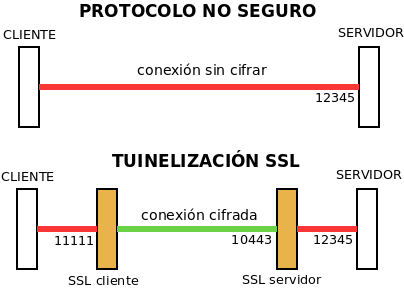
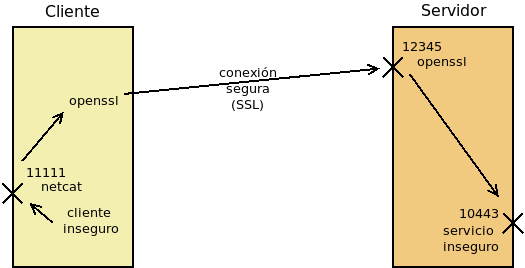

9.1.3.4. Protocolos seguros de red¶
Para la comunicación segura entre extremos se han desarrollado distintos protocolos que recurren al cifrado híbrido. Todos los protocolos modernos incluyen la seguridad en su diseño, pero para asegurar antiguos carentes de ella, nació SSL que es tan sólo un protocolo que permite crear un canal seguro sobre el que puedan actuar protocolos inseguros.
9.1.3.4.1. VPN¶
No es propiamente un protocolo, sino una red privada virtual, esto es una tecnología de comunicación entre redes de ordenadores que permite, a través de una red pública (internet), la conexión segura punto a punto entre dos redes locales de ordenadores. Esta conexión puede ser efectuada en capa 3, en cuyo caso las dos redes extremas serán redes distintas; o en capa 2, en cuyo caso el enlace conectará las dos redes extremas como dos segmentos de una misma red.
Para establecer una VPN no hay un único protocolo, sino toda pléyade de protocolos que se pueden agrupar en cuatro familias: el obsoleto PPTP, las que usan IPSec, los que usan SSL y otros que se basan en Noise.
Ver también
Hay un extenso epígrafe dedicado a este tipo de protocolos.
9.1.3.4.2. SSH¶
Surgió como reemplazo al protocolo telnet que se usaba para la administración remota de servidores. Sin embargo, no se limita a esto y es capaz de ofrecer otros servicios seguros como la transferencia de ficheros o la tunelización de otras comunicaciones, funcionalidad esta análoga a la que ofrece SSL. Utiliza clave pública para implementar el cifrado híbrido e implementa la identificación de servidor y cliente tanto mediante el uso de simples claves como mediante el uso de certificados, aunque éstos tienen un formato propio ajeno al estándar de los certificados digitales X.509.
Es pertinente para este epígrafe estudiar cómo funciona la autenticación de clave pública y sus dos variantes:
9.1.3.4.3. SSL/TLS¶
En realidad son el mismo protocolo, ya que TLS es el sucesor de SSL, aunque es común que se le siga denominando SSL. Básicamente es un protocolo que permite encapsular de modo seguro otro protocolo de red. Surgió en 1994 para encapsular el protocolo HTTP (y crear HTTPs) en los navegadores Netscape.
SSL es independiente del protocolo no seguro que cifre y, simplemente, establece un encapsulamiento cifrado bajo el cual circula el protocolo plano sin modificaciones. Su funcionamiento básicamente es el siguiente:
Los extremos establecen una conexión segura según lo explicado en el cifrado híbrido a fin de que la clave simétrica esté presente en ambos extremos y pueda establecerse el túnel.
En el cliente, la comunicación en el protocolo arbitrario se cifra gracias a SSL y se envía al servidor donde el protocolo SSL se encarga de descifrar y entregar la comunicación en claro al servidor.
La respuesta del servidor se cifra, se envía a través de la red, y al llegar al cliente, se descifra y se entrega al cliente.
Podemos pues considerar al protocolo SSL como un mero intérprete que se encarga de cifrar la comunicación al salir y descifrarla al entrar.

Por tanto, servidor y cliente siguen comunicándose a través del mismo protocolo en claro. Lo que suele ocurrir, no obstante, es que ambos, servidor y cliente, lleven incorporada la capacidad de cifrar con SSL. Por ejemplo, en una comunicación HTTPs, que no es más que HTTP sobre SSL, se comunican directamente navegador con servidor web, porque son ellos dos los que también cifran y descifran. Sin embargo, esto no tiene por qué ser así. Es bastante común el siguiente esquema:

en el que no es el servidor web el que cifra usando el protocolo SSL, sino un proxy web intermedio. Este proxy web inverso, se encuentra en la misma máquina que el servidor o en una máquina de la misma red, por lo que no se compromete la seguridad y facilita que se pueda colocar entre él y el servidor web, un proxy de cacheo como varnish que, con una buena política, permite agilizar el servicio de páginas dinámicas.
SSL usa certificados digitales X.509. que, además, de contribuir al cifrado, permiten al cliente confirmar la identidad del servidor.
9.1.3.4.3.1. SNI¶
Al cifrar TLS por completo el protocolo subyacente, es preciso que opere el certificado antes de poder acceder a cualquier información de capa de aplicación. Esto supone un problema cuando un servidor maneja varios certificados, cada uno asociado a un nombre de máquina, y se precisa conocer de antemano qué nombre ha utilizado el cliente al hacer la petición para que el servidor utilice el certificado correspondiente. En este caso, no hay modo de saber el nombre sin descifrar y no se puede descifrar hasta no conocer cuál es el nombre de máquina.
Para sortear este inconveniente se creó la extensión SNI, que permite incluir sin cifrar el nombre de la máquina a la que se conecta el cliente, de modo que el servidor pueda escoger el certificado adecuado. Todos los navegadores modernos soportan esta extensión.
9.1.3.4.3.2. STARTTLS¶
El uso de SSL tiene, sin embargo, un inconveniente: al tener que establecerse previamente el túnel seguro, dentro del cual circula el protocolo en claro, es necesario utilizar un puerto distinto de escucha, ya que o se escucha para establecer una comunicación con el protocolo en claro o se escucha para establecer un canal seguro. Esa es la razón por la que los servidores web escuchan habitualmente en el puerto 80 (HTTP) y en el puerto 443 (HTTPs).
Puerto original |
Puerto seguro |
Propósito |
|---|---|---|
SMTP/25 |
SMTPS/465 |
Envío de correo electrónico. |
HTTP/80 |
HTTPS/443 |
Servicio web. |
POP3/110 |
POP3S/995 |
Buzón de correo electrónico. |
IMAP/143 |
IMAPS/993 |
Buzón de correo electrónico. |
LDAP/389 |
LDAPS/636 |
Servicio de directorio. |
Para evitarlo, se ideó STARTTLS que es una extensión para los protocolos en claro (SMTP, IMAP, LDAP, etc.) que permite negociar el cifrado, de manera que servidor y cliente establecen comunicación con el protocolo correspondiente y negocian para que la comunicación pase a cifrarse con SSL. Gracias a ello, no es necesario ocupar dos puertos distintos y la comunicación, segura o no, puede realizarse siempre por el puerto tradicional. No obstante:
A diferencia de lo que ocurre en el resto de protocolos, en la comunicación web, sigue sin usarse STARTTLS. En los demás, se ha ido abandonando el uso del protocolo seguro por la negociación del cifrado.
En el protocolo SMTP suelen usarse dos puertos distintos para negociación STARTTLS: el 25 para comunicación entre servidores, por lo general, sin autenticación; y el 587 para comunicación con autenticación cliente-servidor.
9.1.3.4.3.3. Pruebas prácticas¶
Es posible ilustrar cómo actúa el protocolo SSL con algunas órdenes sencillas y a ello dedicaremos el epígrafe:
9.1.3.4.3.3.1. Conexiones SSL¶
Empecemos probando sobre un servidor de correo (protocolo SMTP) que utiliza SSL para asegurar el secreto de la información. Como ya hemos dejado dicho, en el puerto 587 se habilita una negociación. Por tanto, si el cliente no entiende SSL y utiliza directamente el protocolo SMTP, la conexión simplemente será no segura:
$ telnet smtp.gmail.com 587
Trying 108.177.15.108...
Connected to gmail-smtp-msa.l.google.com.
Escape character is '^]'.
220 smtp.gmail.com ESMTP r12sm6291342wrq.3 - gsmtp
EHLO localhost
250-smtp.gmail.com at your service, [81.0.56.71]
250-SIZE 35882577
250-8BITMIME
250-STARTTLS
250-ENHANCEDSTATUSCODES
250-PIPELINING
250-CHUNKING
250 SMTPUTF8
QUIT
221 2.0.0 closing connection r12sm6291342wrq.3 - gsmtp
Connection closed by foreign host.
que es lo que se ilustra en el código de arriba. Si por el contrario quisiéramos negociar la seguridad para que la conexión sea cifrada, podemos usar convenientemente openssl sobre el mismo puerto:
$ openssl s_client -connect smtp.gmail.com:587 -starttls smtp -quiet
depth=2 OU = GlobalSign Root CA - R2, O = GlobalSign, CN = GlobalSign
verify return:1
depth=1 C = US, O = Google Trust Services, CN = Google Internet Authority G3
verify return:1
depth=0 C = US, ST = California, L = Mountain View, O = Google LLC, CN =
smtp.gmail.com
verify return:1
250 SMTPUTF8
EHLO localhost
250-smtp.gmail.com at your service, [81.0.56.71]
250-SIZE 35882577
250-8BITMIME
250-AUTH LOGIN PLAIN XOAUTH2 PLAIN-CLIENTTOKEN OAUTHBEARER XOAUTH
250-ENHANCEDSTATUSCODES
250-PIPELINING
250-CHUNKING
250 SMTPUTF8
QUIT
221 2.0.0 closing connection 200sm9064552wmw.31 - gsmtp
read:errno=0
Por últimos, podemos establecer el canal seguro y, una vez establecido, iniciar la conversación, o sea, utlizar SMTPs. Para ello, podemos conectarnos al puerto 446 con openssl:
$ openssl s_client -connect smtp.gmail.com:465 -quiet
depth=2 OU = GlobalSign Root CA - R2, O = GlobalSign, CN = GlobalSign
verify return:1
depth=1 C = US, O = Google Trust Services, CN = Google Internet Authority G3
verify return:1
depth=0 C = US, ST = California, L = Mountain View, O = Google LLC, CN =
smtp.gmail.com
verify return:1
220 smtp.gmail.com ESMTP h16sm24225437wrb.62 - gsmtp
EHLO localhost
250-smtp.gmail.com at your service, [81.0.56.71]
250-SIZE 35882577
250-8BITMIME
250-AUTH LOGIN PLAIN XOAUTH2 PLAIN-CLIENTTOKEN OAUTHBEARER XOAUTH
250-ENHANCEDSTATUSCODES
250-PIPELINING
250-CHUNKING
250 SMTPUTF8
QUIT
221 2.0.0 closing connection h16sm24225437wrb.62 - gsmtp
read:errno=0
Nota
Para incluir SNI en la petición de openssl puede añadirse la opción -servername smtp.gmail.com.
9.1.3.4.3.3.2. Tunelización¶
Nuestra intención ahora es investigar cómo tunelizar cualquier conexión insegura con SSL:
Como se representa en el gráfico se interpone un cliente-servidor SSL en la comunicación, independiente de los cliente-servidor inseguros que quieren comunicarse. Ambos clientes están en una misma máquina y ambos servidores en otra distinta. En consecuencia, el tráfico de red que circula entre distintas máquinas está cifrado. El cliente conecta con el cliente SSL a través de un puerto en la interfaz local (p.e. 11111), este último contacta con el servidor SSL en el puerto 10443, el cual, a su vez, conecta con el servidor que escucha emn otro puerto de la interfaz local (12345).
Utilizaremos dos herramientas distintas:
openssl que nos permite hacer pruebas circunstanciales bien para poner en práctica el concepto, bien para resolver una situación particular en que queramos asegurar de forma puntual una comunicación insegura.
stunnel que puede actuar como un servicio permanente de tunelización (p.e. para ocultar dentro de un túnel SSL una conexión SSH).
Podemos tunelizar cualquier servicio, pero para no desviar la atención hacia el propio servicio utilizaremos netcat. Además, necesitamos un certificado digital que permita identificar al servidor. Utilizaremos uno autofirmado para el servidor:
$ openssl req -x509 -newkey rsa:4096 -keyout tunnel.pem -out tunnel.pem -nodes -subj "/CN=localhost"
openssl
openssl tiene dos subcomandos que implementan un cliente (s_client) y un servidor (s_server) SSL que se limitan a establecer el canal y, una vez hecho, a pasar en crudo la información. Así, si en el servidor hacemos:
u@servidor:~$ openssl s_server -port 12345 -cert tunnel.pem -key tunnel.pem -quiet
quedará escuchando el servicio en el puerto 12345. Por su parte, en el cliente podemos hacer:
u@cliente:~$ openssl s_client -connect IP.DEL.SERVIDOR:12345 -quiet
Y podremos conversar entre ambas máquinas de manera que lo se escribe en un extremo se ve en el otro, pero los mensajes viajarán cifrados entre ambos extremos. Nuestra intención, no obstante, no es ésta, sino tunelizar cualquier servicio. Para ello supongamos que tenemos un servicio inseguro escuchando en el puerto 10443[1] del servidor:
u@servidor:~$ netcat -l -s localhost -p 10443
openssl s_server. desgraciadamente, sólo puede escribir en pantalla y leer de teclado, así que no tiene capacidad para utilizar como entrada/salida el puerto 10443 que es en realidad lo que realmente necesitamos. Sin embargo, podemos usar con destreza las redirecciones para suplir esta carencia:
u@servidor:~$ exec 3<>/dev/tcp/localhost/10443
u@servidor:~$ openssl s_server -port 12345 -cert cert.pem -key cert.key -quiet <&3 >&3
esto es, hacemos que el descriptor 3 lea y escriba en el puerto en el que escucha nuestro servicio y redirigimos openssl para que lea y escriba en ese descriptor. En consecuencia, openssl será capaz de escribir y leer en el puerto del servicio.
En el cliente tenemos el mismo problema: openssl s_client utiliza entrada y salida estándar y no hay forma de que exponga un puerto de escucha para que un cliente (el cliente correspondiente al servicio anterior) pueda comunicarse con él para que le sirva de intérprete. Sin embargo también tenemos una argucia:
u@cliente:~$ netcat -l -s localhost -p 11111 -c "openssl s_client -connect IP.DEL.SERVIDOR:12345 -quiet"
que consiste en poner a escuchar a netcat en un puerto local pero haciendo que su entrada/salida no sea la entrada y salida estándar sino la entrada/salida de openssl, que se encarga de cifrar/descifrar y comunicarse con el otro extremo. Ahora bastará con usar el programa cliente para que se conecte al puerto 11111 de la interfaz local. Como nuestro servicio en el servidor lo montamos con netcat, tendremos que usar como cliente netcat:
u@cliente:~$ netcat localhost 11111
El esquema de conexiones es el siguiente:
Nota
Es obvio que hemos complicado todo muchísimo en el ejemplo para acabar teniendo el mismo resultado que cuando se usaron openssl s_client y openssl s_server directamente. Esto, no obstante, es debido que para ilustrar la técnica hemos utilizado como servicio netcat, pero podría haber usado cualquier otro servicio distinto (p.e. telnet).
stunnel
En este caso, es probable que no tengamos instalado el servicio:
# apt install stunnel4
que necesitará el certificado digital autofirmado que debimos generar con
openssl. Supondremos que el certificado lo guardamos en
/etc/stunnel/tunnel.pem. Configuremos la parte de servidor creando el
archivo /etc/stunnel/nc.conf (el nombre es irrelevante: basta con su
extensión sea .conf):
[netcat-ssl]
cert = /etc/stunnel/stunnel.pem
accept = IP.DEL.SERVIDOR:10443
connect = 127.0.0.1:12345
De esta forma, stunnel escucha como servidor SSL en la interfaz pública del puerto 10443 y traslada la información en claro al servicio que escucha en el puerto 12345 de la interfaz local.
Nota
En Stretch es necesario también habilitar explícitamente el
servicio editando el fichero /etc/default/stunnel4:
ENABLED=1
Hecha la configuración, podemos reiniciar el servicio:
root@servidor:~# invoke-rc.d stunnel4 restart
Solo falta, poner a escuchar el servidor según lo especificado en la configuración:
u@servidor:~$ nc -l -s localhost -p 12345
Por su parte, en el cliente debemos también instalar stunnel y arrancarlo con esta configuración:
[netcat-ssl]
client = yes
accept = 127.0.0.1:11111
connect = IP.DEL.SERVIDOR:10443
Y listo, la comunicación ya puede establecerse:
u@cliente:~# netcat localhost 11111
Advertencia
Aunque la comunicación se lleva a cabo perfectamente, hay, sin embargo, una muy grande diferencia respecto a cuando hicimos la conexión directa (y sin cifrar): el netcat servidor siempre conecta con el stunnel local con lo que para él todas las conexiones son locales y desconoce por completo cuál es la IP del cliente con el que se está comunicando. En el cliente ocurre otro tanto, aunque en este caso es menos importante. Para paliar esto, la parte servidor de stunnel debería ejecutarse como un proxy transparente.
Notas al pie